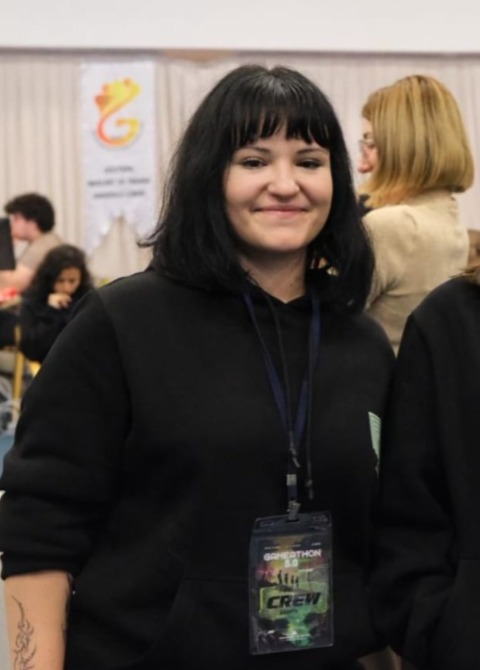

Okul Destek Derneği'nde çocuk öğrencilere Scratch eğitimi vererek temel algoritma mantığı, problem çözme ve görsel programlama konularında destek oluyorum. Bu süreçte teknik bilgimi anlaşılır şekilde aktarma, öğrencilerin seviyesine göre anlatım yapma ve sabırlı iletişim kurma becerilerimi geliştiriyorum.
Yazılım geliştirici adayı
Ada Mısırlı
Yazılım geliştirme, yapay zekâ ve mobil uygulama alanlarında kendini geliştiren bir bilgisayar programcılığı öğrencisiyim.
- 10+
- GitHub projesi
- 2
- CV dili
- 10+
- Teknoloji

Hakkımda
Analitik düşünceyi işlevsel yazılım çözümlerine dönüştürüyorum.
Bilgisayar Programcılığı eğitimim kapsamında Java, C#, TypeScript, JavaScript, Python, SQL, HTML/CSS, PHP, React Native ve Flutter gibi teknolojiler üzerine kendimi geliştiriyorum.
Sistem analizi ve tasarımı kapsamında SDLC planlama süreci, gereksinim analizi, use case senaryoları, ER diyagramı, Gantt/CPM planlaması ve backlog yönetimi üzerine çalışmalar yaptım. Mobil uygulama geliştirme, veri analizi ve veritabanı kullanımı alanlarında uygulamalı deneyim kazanmaya devam ediyorum.
- Eğitim: İzmir Ekonomi Üniversitesi / Bilgisayar Programcılığı
- Odak: Mobil uygulama geliştirme ve proje analizi
- Konum: İzmir, Türkiye
Gönüllü Deneyim
Okul Destek Derneği'nde çocuklara Scratch eğitimi veriyorum.
Projeler
GitHub üzerinde yayınlanan çalışmalarım
Bu bölümde geliştirdiğim web, analiz ve veritabanı odaklı çalışmalardan öne çıkan örnekleri bulabilirsiniz.
NovaCare
Sağlık kayıtlarına güvenli ve erişilebilir şekilde ulaşmayı hedefleyen NovaCare projesinde kullanıcı deneyimi, veri akışı ve sağlık hizmetlerine dijital erişim odağıyla çalıştım.
GitHub ReposuMobile Chess
Mobil cihazlar için geliştirilen satranç odaklı oyun projesinde oyun akışı, kullanıcı etkileşimi, hamle kontrolü ve mobil arayüz deneyimi üzerine çalıştım.
GitHub ReposuCineFlix Film Platformu
Film arama, kategori bazlı listeleme, detay sayfası ve kullanıcı dostu arayüz akışıyla hazırlanan modern film tanıtım web sitesi. Tasarımda responsive yapı ve okunabilir içerik düzeni önceliklendirildi.
GitHub ReposuEczane Arayüzü
Eczane süreçleri için ürün, stok ve işlem takibini kolaylaştırmaya odaklanan arayüz çalışması. Kullanıcı dostu ekran akışı ve temel yönetim işlemleri ön planda tutuldu.
GitHub ReposuMağaza Satış Uygulaması
Mağaza satış işlemleri, ürün yönetimi ve kayıt takibi için geliştirilen uygulama. Satış akışını daha düzenli hale getiren temel ekranlar ve veri yönetimi yapısı üzerine çalışıldı.
GitHub ReposuHotel Booking Analysis
Otel rezervasyon süreci için gereksinim analizi, kullanıcı rolleri, temel senaryolar ve iş akışlarını ele alan analiz çalışması. Sistem tasarımı ve planlama çıktıları odak noktasıdır.
GitHub ReposuBeceriler
Teknik ve kişisel yetkinlikler
Teknik
Analiz ve Proje
Kişisel
Dil
CV İndirme
Türkçe ve İngilizce CV dosyaları
CV dosyalarımı Türkçe ve İngilizce olarak hazırladım. Eğitim bilgilerim, teknik becerilerim, proje deneyimlerim ve iletişim bilgilerime bu dosyalar üzerinden ulaşabilirsiniz.
İletişim
Benimle iletişime geçin
Staj, proje ve iş birliği fırsatları için belirtilen kanallardan ulaşabilirsiniz.